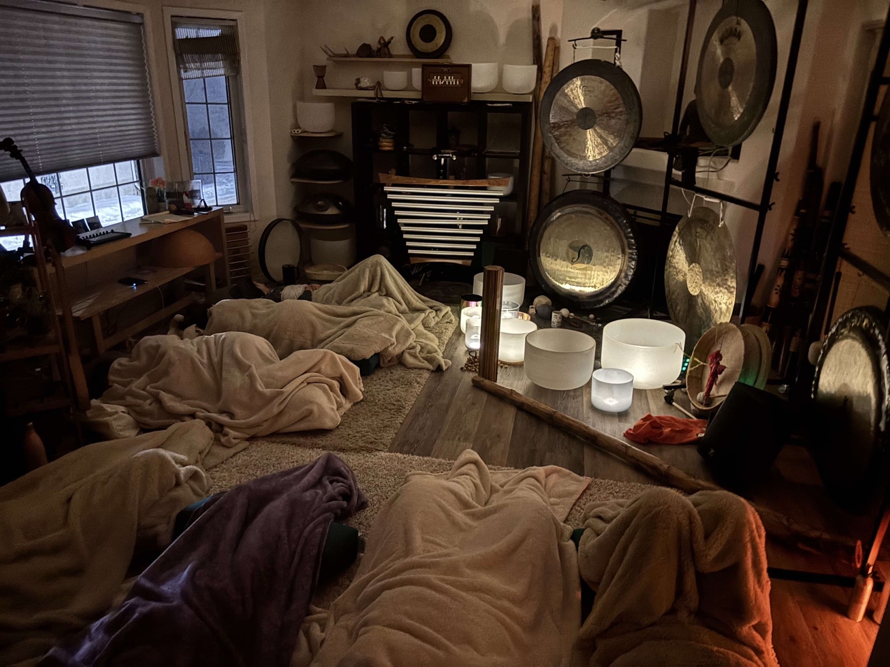
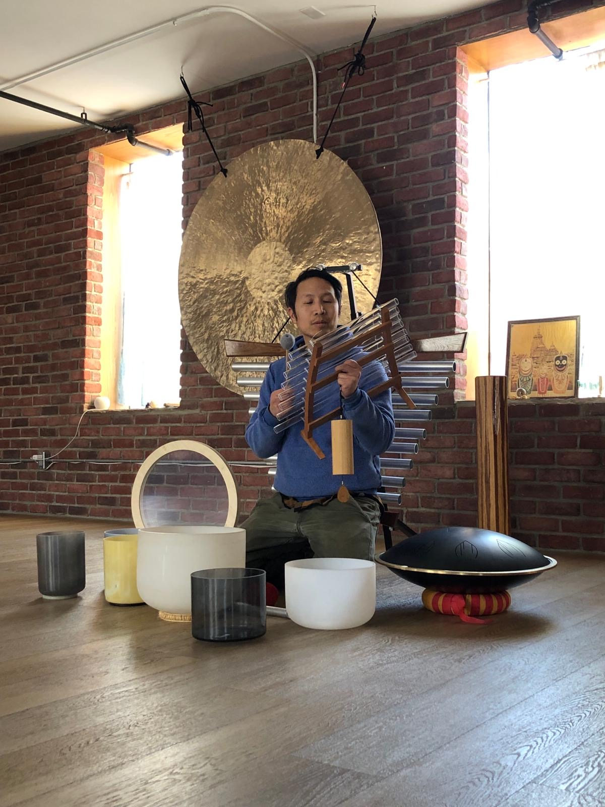

What to Expect at Your First Sound Bath in Edmonton

What Is a Sound Bath, Exactly?
A sound bath is an immersive experience where you're "bathed" in sound waves produced by acoustic instruments that often feature resonating sound waves, with a long and slow decay. Simply put, it takes a long time for the sound to fade away. In my sound baths, it can be a mix — crystal singing bowls, Tibetan bowls, gongs, chimes, flute, and sometimes voice. You lie on a mat, close your eyes, and let yourself be immersed in the sound.
Something worth pointing out is that not all sound baths are created equal, when it comes to range. Most practitioners work with a single octave of singing bowls. I typically use three octaves — lower, middle, and high — which creates a fuller spectrum of sound. Cascading resonance of a planetary gong, deep singing bowls or celestial chimes, each add their own frequency range, meaning you feel, send and hear those vibrations differently.
The science behind it is like this: specific frequencies and tonal qualities activate the parasympathetic nervous system — the "rest and digest" mode that counteracts chronic stress. It's not about one magic number or frequency, though that's a conversation worth having. It's about intervals, the space and silence between two notes, just as it is about intention and tone. Soothing, nurturing, calming, harmonious sound that invites your body to let go. Sometimes I'll use more intense vibrations or a bit of dissonance intentionally. It helps to bring a little tension to the surface so it can resolve. Just like in a movie, a plot builds up, then resolves. The resolution is satisfying — that release is part of the healing.
Brainwave entrainment research shows that sustained tonal sound can shift your brain from beta (active thinking) to alpha and theta states — the same territory as deep meditation and the edge of sleep. You're not imagining the relaxation. It's measurable.
And if we take the "bathing" metaphor a step further — we can think about cleansing and clearing. That might sound purely energetic, but think practically: we know that soap, water, and scrubbing helps our physical body — getting into the nitty gritty, under the nails, between the toes. Sometimes clearing the counter is just what you need to be able to think straight and focus. Sound affects our physical body, organs, fluids, and has a way of working with the non-physical parts of us — our energy fields, our energy centres. That's a deeper discussion for another post, but it's worth planting the seed here.
What to Bring
Comfort is the priority. It's the key to dropping in. The more comfortable you are, the more your body can surrender to the experience.
- A yoga mat or thick sleeping pad
- A blanket — your body temperature drops when you relax deeply. Think layers: warmth you can add or shed
- A pillow or bolster for under your knees or head
- An eye mask if you have one
- Water for after
- An open mind — that's genuinely all you need
Some sessions I offer out of my own space, where I provide most of these. Otherwise, bring your own and don't be shy about making yourself a proper nest.
It really can be helpful to leave your expectations at the door. If you ask most sound bathers, they'll tell you that almost all experiences are unique. Some people have profound emotional releases. Some people fall asleep and snore — honestly, that's fine. We have snore patrol at our sound baths — a helper to gently have you come to so you can still be deep in the experience, but not affect others. It's nothing to be embarrassed about, but it helps us take care of the shared space. Some people feel subtle tingling or warmth. Some just feel... rested. There's no right way to experience a sound bath. In fact, I often prefer to call it a Sound Journey.
The truth is, there's a wide variety of phenomena that can happen, and it often changes every time. I personally think the research is still very young. But we do know that ancient cultures have used sound, vibration, song, prayer, and intention for healing and deeper connection for a very long time. We're not inventing something new — we're remembering something old.

What the Session Actually Looks Like
Most of my Edmonton sound baths run about 45-60 minutes of actual sound time. Factor in some extra time to arrive, get oriented, set up your space, and drop in. Here's how it typically flows:
Arrival and settling in — You set up your mat, get comfortable, and we do a brief grounding check-in. I'll explain the instruments and what to expect. No pressure, no performance.
The opening — I usually start with something gentle: a small singing bowl, a soft rattle, or a few minutes of silence. This is time for the mind to settle and unwind — the transition from beta to alpha. If you're wound up from a busy day, expect it to take a few minutes to come down. That's completely normal and part of the journey. You're transitioning from the outside world to the inside one.
The journey — This is the heart of it. I layer sounds — crystal bowls, gong, chimes — building and releasing in waves. Your only job is to breathe and let go. Thoughts will come. That's normal. Let them drift past like clouds. The sound helps.
The close — I bring the volume and intensity down gradually, ending in near-silence. This transition matters. Going from deep rest to full alertness too fast is jarring — like waking someone from a dream by slamming a door.
Integration time — A few minutes of quiet silence before anyone moves. Then we come back slowly together.

Common Questions
Will I fall asleep?
Maybe. Don't fight it. Sleep during a sound bath is still restorative — your body is doing what it needs to do.
What if I can't stop thinking?
That's not failure, it's just what minds do. The sound gives your brain something to track instead of your to-do list. Over time, it gets easier.
Is it spiritual or religious?
Sound healing has roots in many traditions, but my sessions aren't tied to any specific belief system. You can experience this fully whether you're deeply spiritual or thoroughly skeptical. The physics works regardless.
What if I need to leave early?
Life happens. Sit near the door, and slip out quietly — I won't be offended.
Why Edmonton People Are Showing Up
There's something happening in this city. I've watched the sound bath community in Edmonton grow from a small curious handful to full rooms of people who are genuinely hungry for something slower, quieter, more embodied. People are tired of being told to "just meditate" without being given a doorway in. Sound baths seem to be that doorway.
If you're overwhelmed, burned out, struggling with sleep, or just curious — this is worth trying once. Most people who come once come back or try another one of my other curated sessions.

Ready to Try Your First Sound Bath in Edmonton?
Check out our upcoming events and reserve your spot. Sessions fill up — especially on weekends. Bring a friend if that makes it easier. I'll see you on the mat.
— Marcus